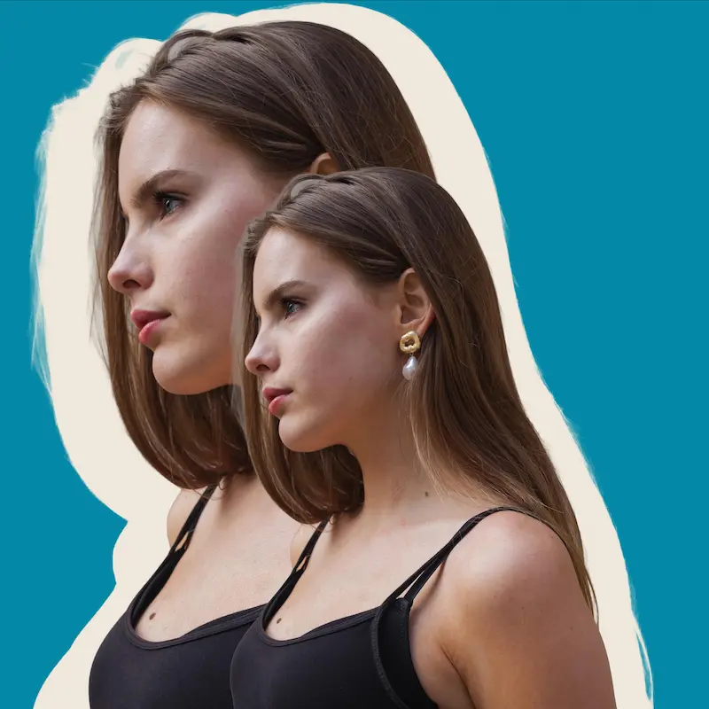

MIN REJSE I MULTIMEDIEDESIGN

ET INDBLIK I MIT ARBEJDE
Jeg er multimediedesign-studerende med fokus på digitalt design, UX/UI og visuel kommunikation. På dette website præsenterer jeg mit arbejde, min proces og min læring fra 1. semester.
Se mere